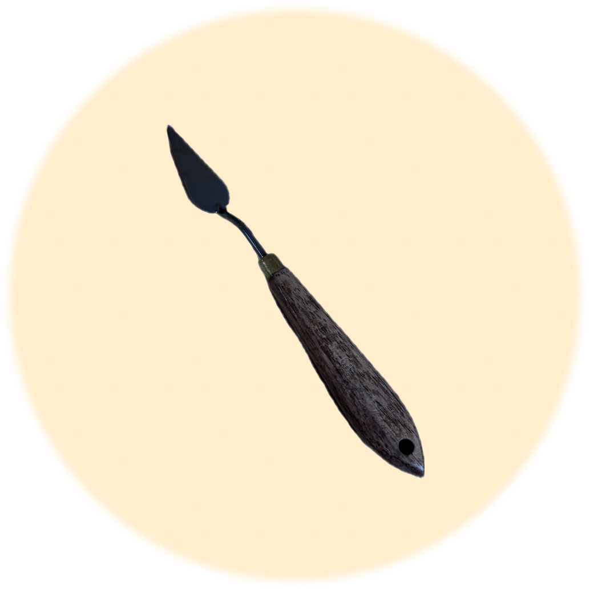

Objet débloqué !
Bravo tu as trouvé le scalpel, on l'utilise pour en des tâches minutieuses telles que le retrait de vernis,
l'élimination de couches indésirables, la préparation des surfaces.

Il te manque plus qu'un seul objet avant de pouvoir restaurer l'œuvre.
Clique sur continuer pour passer à l'épreuve suivante !
CONTINUER